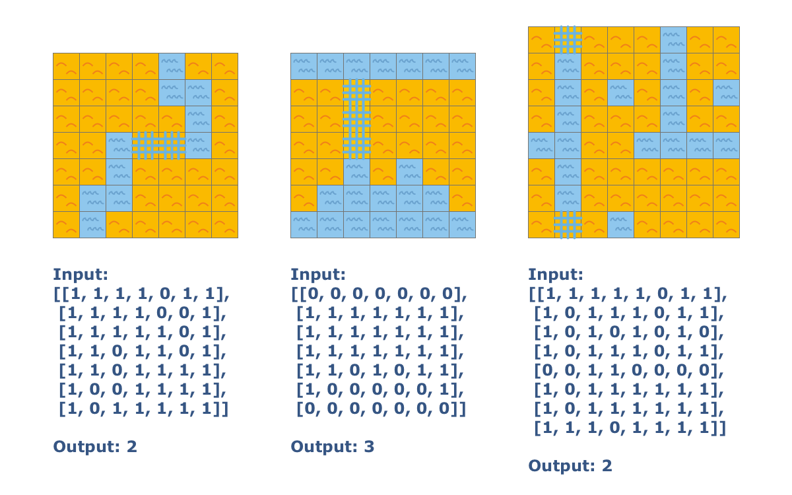

The robots are trying to colonize a new island. There are many rivers on this island and it would be good idea for them to use ships designed for water, rather than their spaceships. Some of the territories do not have a river for transportation from one edge of a field to another. The robots can dig a canal and convert the land to water if need be. We must explore a field map and count the minimum number of cells necessary for a canal that would allow the robots to sail from northern edge of the map to southern edge. The map is in a 2D array, where 0 is water, 1 is land. Cells are connected by their edges.
Input: A map as a list of lists with 1 or 0.
Output: The minimum number of cells necessary for a canal as an integer.
Example:
checkio([[1, 1, 1, 1, 0, 1, 1],
[1, 1, 1, 1, 0, 0, 1],
[1, 1, 1, 1, 1, 0, 1],
[1, 1, 0, 1, 1, 0, 1],
[1, 1, 0, 1, 1, 1, 1],
[1, 0, 0, 1, 1, 1, 1],
[1, 0, 1, 1, 1, 1, 1]]) == 2
checkio([[0, 0, 0, 0, 0, 0, 0],
[1, 1, 1, 1, 1, 1, 1],
[1, 1, 1, 1, 1, 1, 1],
[1, 1, 1, 1, 1, 1, 1],
[1, 1, 0, 1, 0, 1, 1],
[1, 0, 0, 0, 0, 0, 1],
[0, 0, 0, 0, 0, 0, 0]]) == 3
Precondition:
0 < len(land_map) < 10all(0 < len(row) < 10 for row in land_map)
Solution:
def get_neighbor(p, llim, wlim):
plist = [(p[0]-1, p[1]), (p[0]+1, p[1]), (p[0], p[1]-1), (p[0], p[1]+1)]
return [p for p in plist if 0<=p[0]<llim and 0<=p[1]<wlim]
def checkio(data):
llim, wlim = len(data)+2, len(data[0])
data = [[0]*wlim] + data + [[0]*wlim]
water = []
for i in range(llim):
for j in range(wlim):
if data[i][j]: continue
visited, to_search = set([]), {(i,j),}
while to_search:
temp = set([])
for p in to_search:
nlist = get_neighbor(p, llim, wlim)
nlist = set([q for q in nlist if data[q[0]][q[1]]==0])
temp |= nlist - visited
visited.add(p)
data[p[0]][p[1]] = 1
to_search = temp
if (llim-1, 0) in visited:
end = visited
else:
water.append(visited)
water.append(end)
n = len(water)
distance = [[0]*n for i in range(n)]
for i in range(n-1):
for j in range(i+1, n):
distance[i][j] = min(abs(p1[0]-p2[0]) + abs(p1[1]-p2[1]) - 1 \
for p1 in water[i] for p2 in water[j])
distance[j][i] = distance[i][j]
if len(distance)==2: return distance[0][1]
S, T, D = {0,}, set(range(1,n)), distance[0][:]
while n-1 not in S:
p_move = min(T, key=lambda x: D[x])
S.add(p_move)
T.remove(p_move)
for p_togo in T:
D[p_togo] = min(D[p_togo], D[p_move] + distance[p_move][p_togo])
return D[-1]